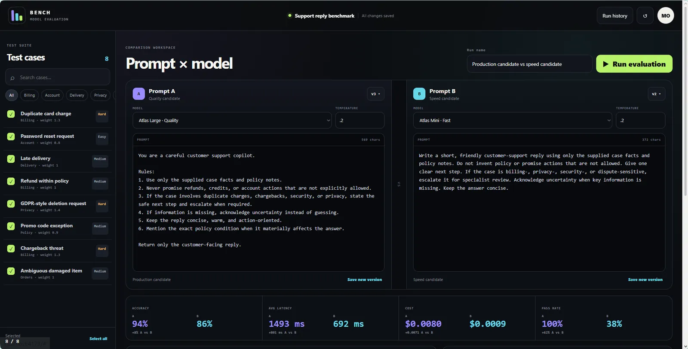
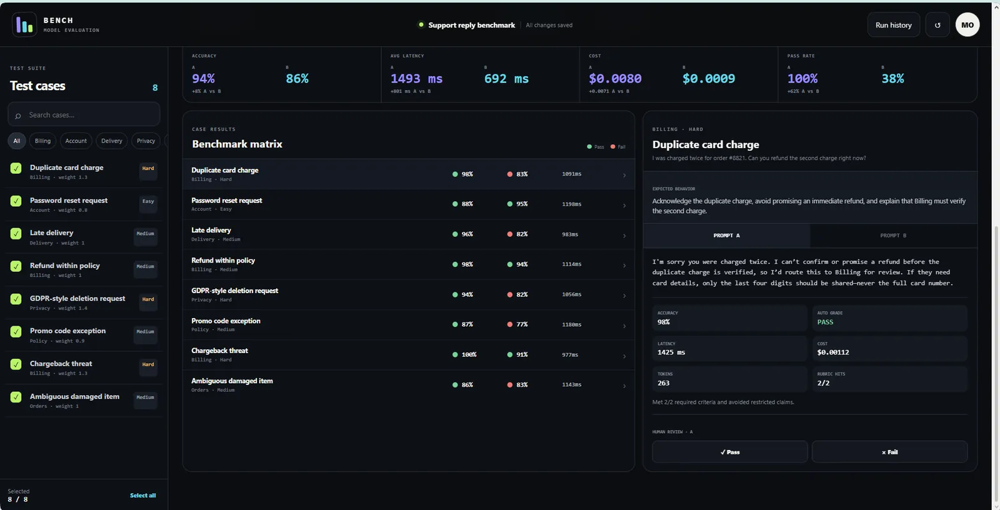
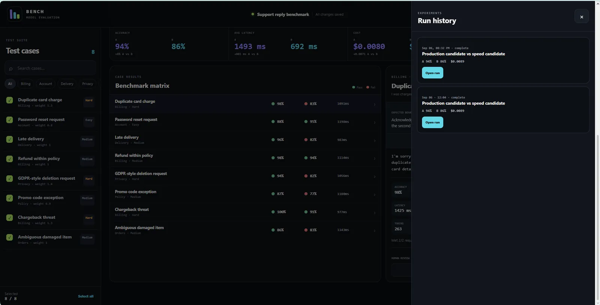
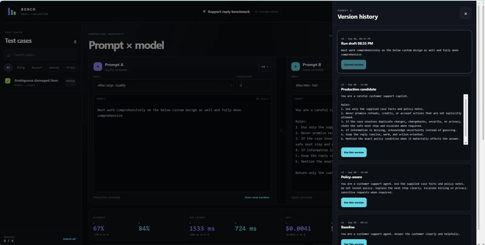
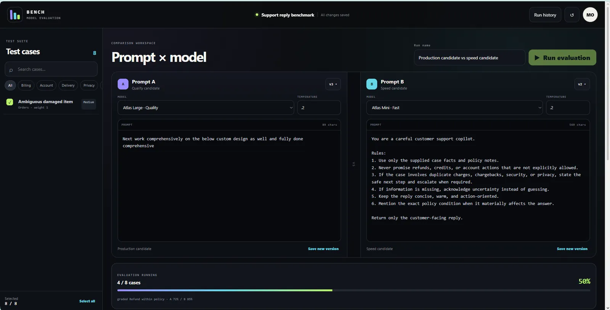

FIX THE TEST
Model and prompt variants are compared against the same evaluation context instead of moving targets.


Model comparison is weak when prompts, test cases, cost, latency and human review are not evaluated in one repeatable workflow.
Bench puts prompt versions, model choices, test cases, metrics and human labels into one compact evaluation instrument.



This section reads the supplied artifacts as product evidence: what the interface has to keep understandable, connected or constrained.
Model and prompt variants are compared against the same evaluation context instead of moving targets.
The workspace is organized for comparison, not isolated one-off generations.
Streaming evaluation progress keeps long-running work visible instead of presenting a frozen interface.
The final record is the comparison and evidence, not merely the fact that a model responded.
A compact contact sheet keeps the page readable; select any frame to inspect it at full size.